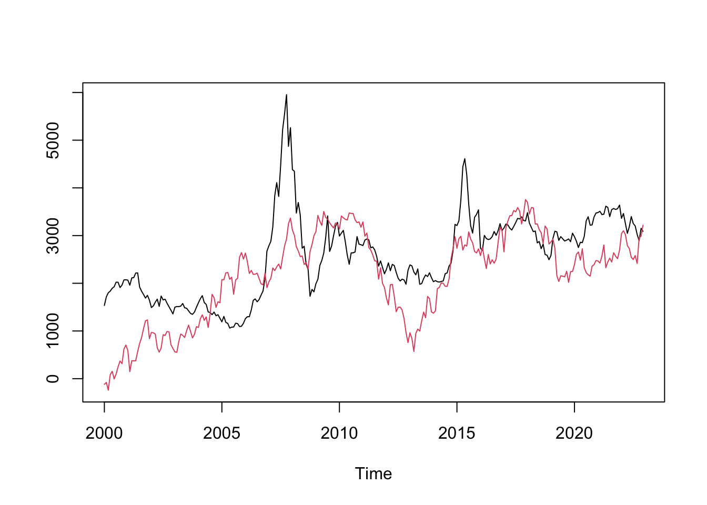
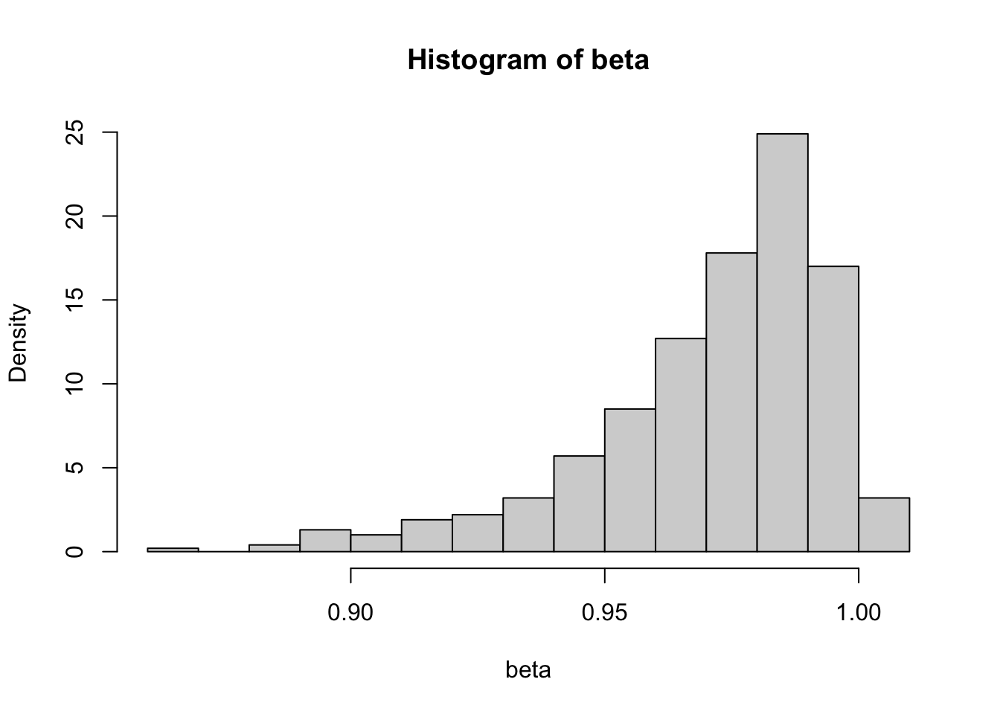

20 Unit Root Process
A unit root process is characterized by the presence of unit roots in the character equation of its ARMA representation. The simplest unit root process is an AR(1) process with \(\phi=1\):
\[ y_t = \phi y_{t-1} + \epsilon_t \]
When \(\phi=1\), it makes each innovation persistent. The effect of past innovations do not fade away no matter how distant they are.
\[ y_t = \sum_{j=0}^{\infty} \epsilon_{t-j} \]
The persistence makes the behavior of unit root processes drastically different from stationary processes. Unit root processes hold particular significance among non-stationary processes due to the prevalence of similar behavior in economic or financial time series. For example, stock prices behave a lot like unit root processes (the Random Walk Hypothesis).
The particularity of unit root process makes it a unique class in itself in terms of analytic techniques. The usual OLS estimator and asymptotic normality does not work with unit root processes. If we regress a unit root process on its lags, the OLS estimator is given by
\[ \hat\phi = \frac{\sum_t y_{t-1}y_t}{\sum_t y_{t-1}^2} \]
We would expect \(\sqrt{T}(\hat\phi -1) \to N(0,\omega^2)\). However, this is not the case. To see this, consider
\[ T(\hat\phi -1) = \frac{T^{-1}\sum_t y_{t-1}\epsilon_t}{T^{-2}\sum_t y_{t-1}^2} \]
Assuming Gaussian innovation \(u_t \sim N(0,\sigma^2)\), we have
\[ y_t = \epsilon_t + \epsilon_{t-1} + \cdots + \epsilon_1 \sim N(0, \sigma^2t) \]
Therefore, \(z_t = \frac{y_t}{\sigma\sqrt{t}} \sim N(0,1)\). Consider the numerator,
\[ \begin{aligned} \frac{1}{T}\sum_{t=1}^{T}y_{t-1}\epsilon_t &= \frac{1}{T}\sum_{i=1}^{T} (\epsilon_1+\cdots+\epsilon_{t-1})\epsilon_t = \frac{1}{T}\sum_{s<t}^{T}\epsilon_s\epsilon_t \\ &= \frac{1}{2T}\left[(\epsilon_1+\cdots+\epsilon_T)^2-\sum_{t=1}^{T}\epsilon_t^2\right] \\ &= \frac{1}{2T}y_T^2 - \frac{1}{2T}\sum_{t=1}^{T}\epsilon_t^2 \\ &= \frac{\sigma^2}{2}\left(\frac{y_T}{\sigma\sqrt{T}}\right)^2 - \frac{1}{2T}\sum_{t=1}^{T}\epsilon_t^2 \\ &= \frac{\sigma^2}{2}z_T^2 -\frac{1}{2T}\sum_{t=1}^{T}\epsilon_t^2 \\ \end{aligned} \]
Since \(z_T \sim N(0,1)\), \(z_T^2 \sim \chi^2(1)\). By the LLN, \(\frac{1}{T}\sum_{t=1}^{T}\epsilon_t^2 \to \mathbb{E}(\epsilon_t^2)=\sigma^2\). Thus,
\[ \frac{1}{T}\sum_{t=1}^{T}y_{t-1}\epsilon_t \to \frac{\sigma^2}{2}(\chi^2(1)-1). \]
So the asymptotic distribution of \(\hat\phi\) is non-Gaussian. The conventional statistical inference no longer make sense. If we simulate the distribution of \(\hat\phi\) by Monte Carlo, we see it is left-skewed. The negative values are almost twice as likely as positive values, meaning two thirds of the time, the estimated \(\hat\phi\) will be less than the true value \(1\). Therefore, the OLS estimate of a unit root process is biased.
# Monte Carlo simulation
beta = sapply(1:1000, function(i) {
y = cumsum(rnorm(200))
x = dplyr::lag(y)
coef(lm (y ~ x))[2]
})
hist(beta, freq = FALSE)
To derive the asymptotic distribution for the unit root process, we need further knowledge of Brownian motions. The idea is derive a continuous version of the unit root process, where each innovation is infinitesimally small. This is the topic of the next section.